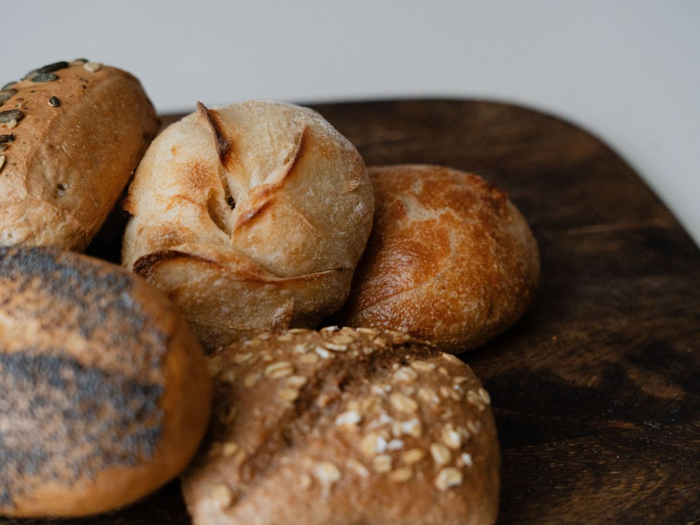
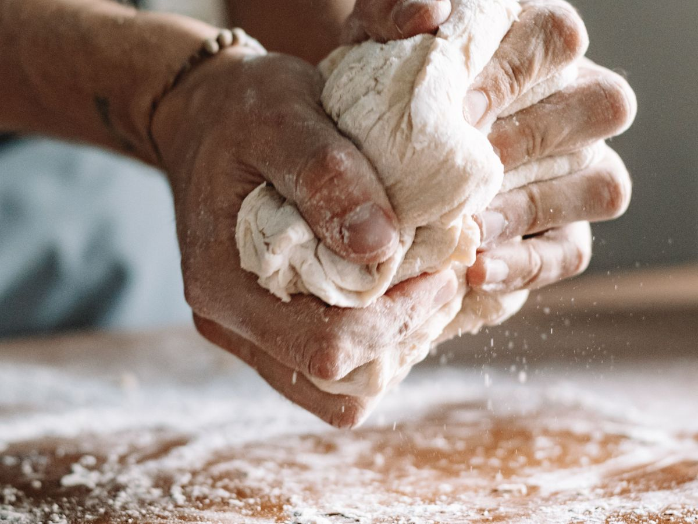
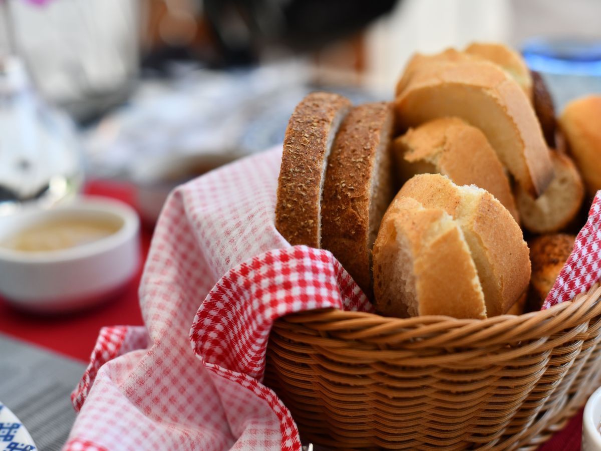
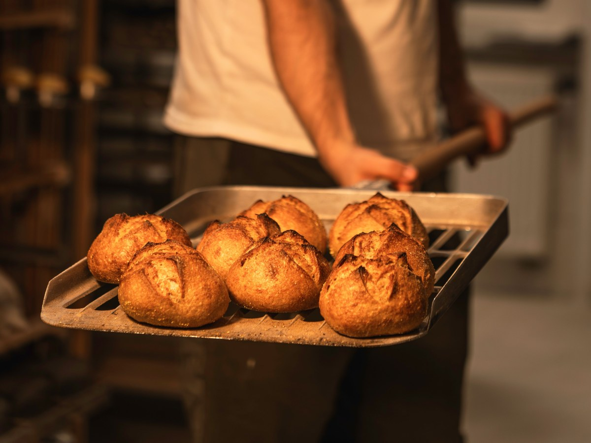
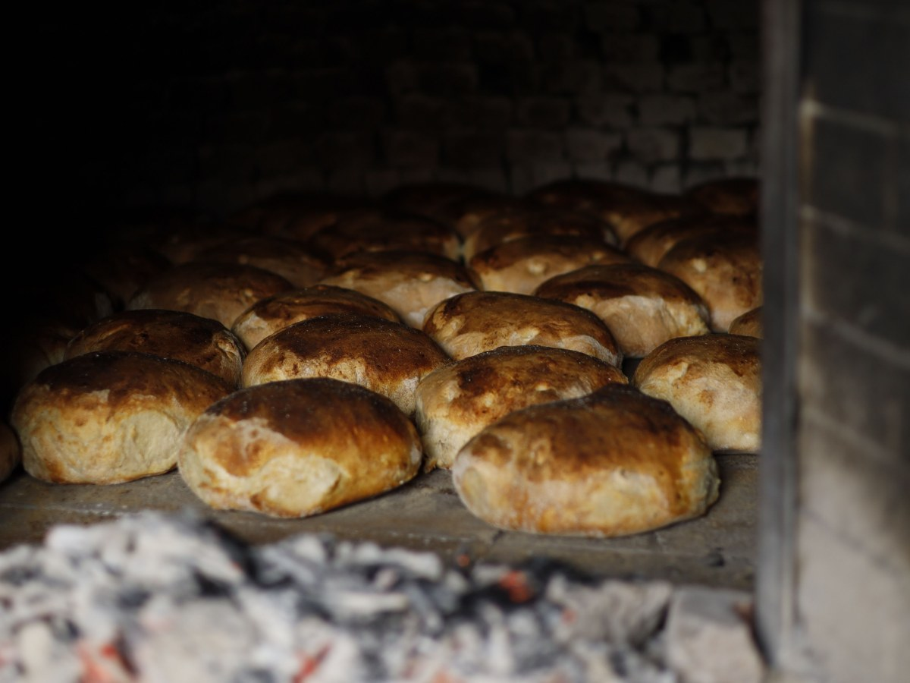
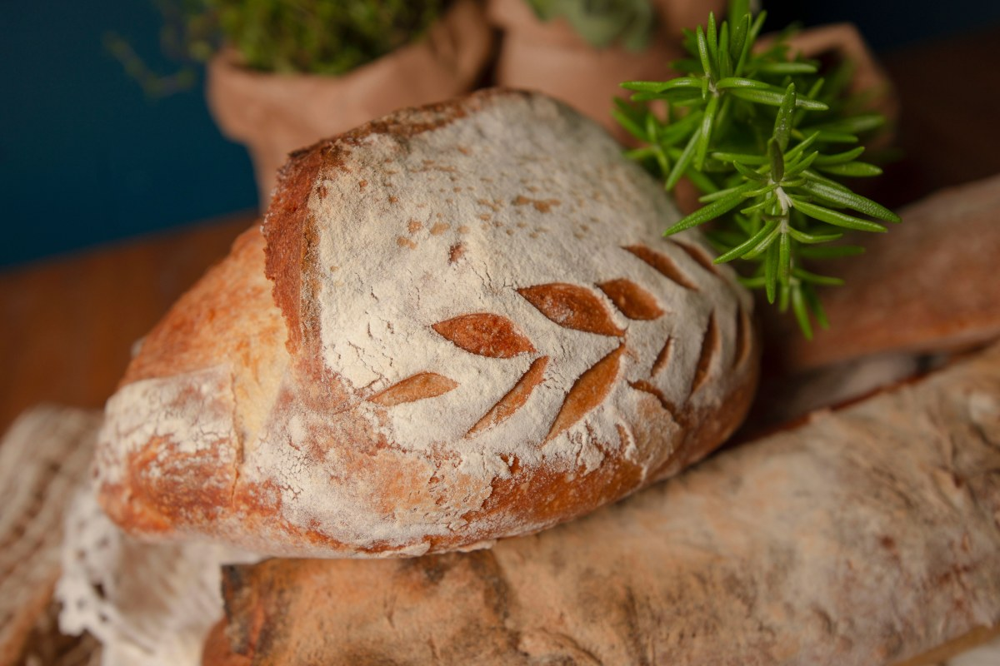
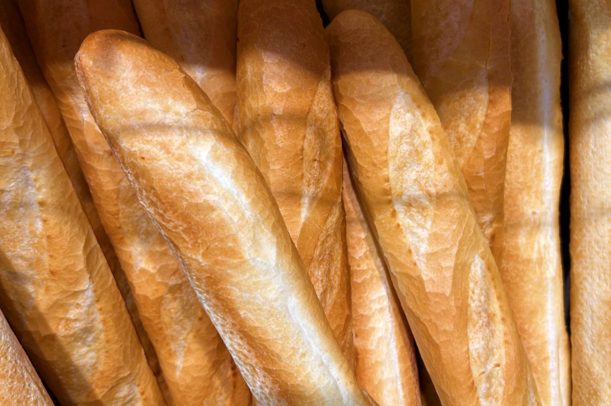
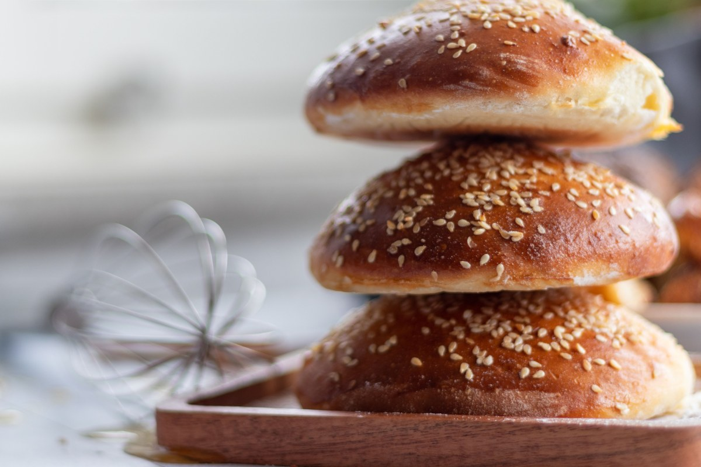
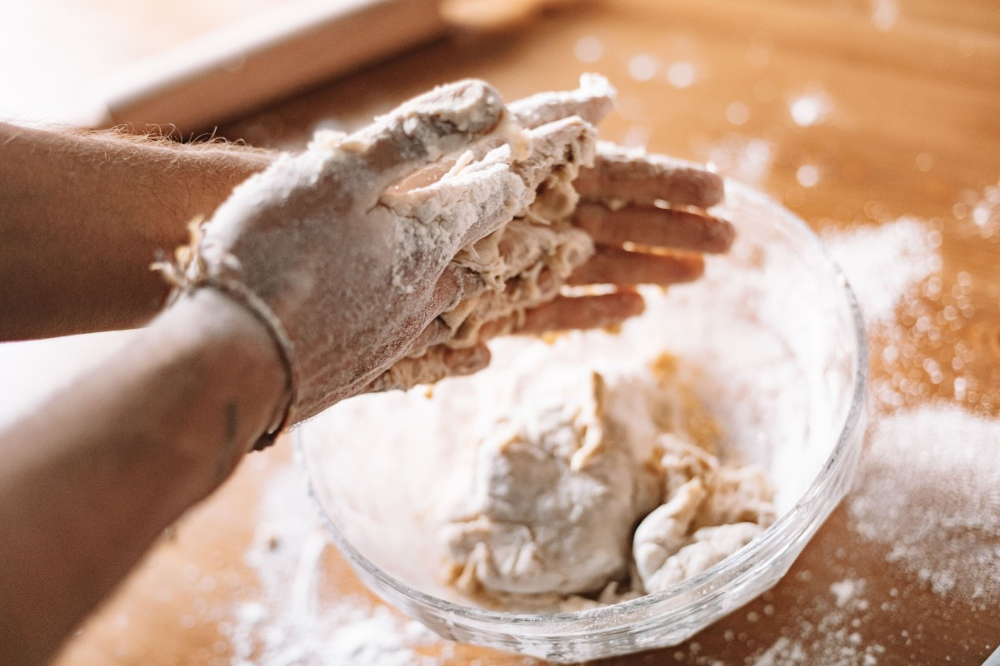
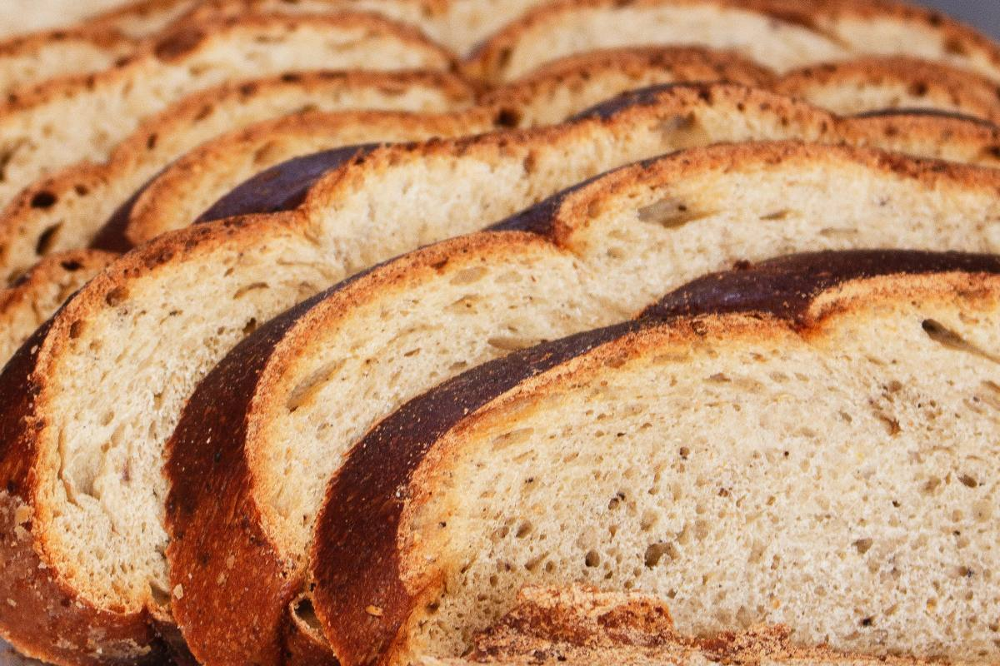

Panadería de barrio, Loncoche
¿A qué hora sale el pan?
Cada hornada con su hora, para no llegar tarde a la marraqueta.
- 64reseñas en Google
- 4,8de nota
- 5hornadas al día
- 0horas publicadas en su ficha
Lo que se pregunta cincuenta veces al día
Las hornadas del día
Las dos grandes son la de las 6:30 y la de las 19:00: a esa hora el pan sale caliente.
-

6:30
La primera. Marraqueta y hallulla para el que sale a trabajar.
-

9:00
Media mañana. Repone lo que se llevó la primera y sale el amasado.
-

12:30
Para el almuerzo. La más chica del día.
-

19:00
La de la once, y la mejor. Después de las ocho queda poco.
-

20:30
Sólo si hay demanda. Mejor llamar antes.
Las reales las pone la panadería, y cambian el fin de semana.
El que llega y no encuentra no vuelve mañana: vuelve a otra parte.
Para que dure
Cómo guardar el pan
- 01
En el refrigerador, no
Ahí se endurece más rápido que sobre la mesa.
- 02
Bolsa de papel
La corteza sigue crujiente hasta la once.
- 03
Congelador, el mismo día
Bien cerrado, para varios días.
- 04
Agua y horno
Corteza húmeda y cinco minutos de horno caliente.
A revisar con la panadería.
Si va a llevar harto, avise en la mañana.
Pedidos grandes
Lo que sale del horno
Del horno al mostrador






Fotos de referencia: las del local las pone la panadería.
Dónde estamos
En Loncoche
- Teléfono
- 9 4483 3893
- Reseñas
- 64 en Google, nota 4,8
- Dirección
- La confirma la panadería
- Horario
- Falta el horario
Para un pedido: qué pan, cuánto y a qué hora lo pasa a buscar.
Loncoche, Araucanía Abrir en Google Maps
Para el dueño
Qué es real y qué falta
Lo verificado
El nombre, el teléfono y las 64 reseñas con nota 4,8.
Lo de ejemplo
Las horas de las hornadas y los consejos para guardar el pan.
Lo que falta
La dirección, el horario y las fotos del local. Con eso queda lista.